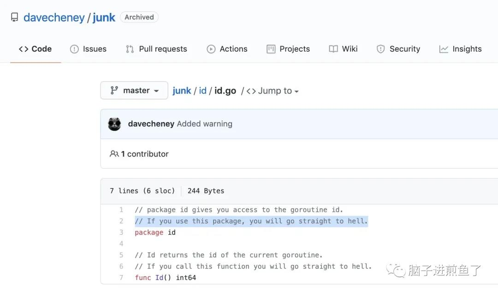

今天的主角，是大家在既有语言基础的情况下，学 Goroutine 时会容易纠结的一点。就是 “进程、线程都有 ID，为什么 Goroutine 没有 GoroutineID？”。
这是为什么呢，怎么做那些跨协程处理呢？
GoroutineID 是什么
我们要知道，为什么大家会下意识的想去要 GoroutineID，下面引用 Go 语言圣经中的表述：
在大多数支持多线程的操作系统和程序语言中，当前的线程都有一个独特的身份（ID），并且这个身份信息可以以一个普通值的形式被很容易地获取到，典型的可以是一个 integer 或者指针值。这种情况下我们做一个抽象化的 thread-local storage（线程本地存储，多线程编程中不希望其它线程访问的内容）就很容易，只需要以线程的 ID 作为 key 的一个 map 就可以解决问题，每一个线程以其 ID 就能从中获取到值，且和其它线程互不冲突。
也就是指在常规的进程、线程中都有其 ID 的概念，我们可以在程序中通过 ID 来获取其他进程、线程中的数据，甚至是传输数据。就像一把钥匙一样，有了他干啥都可以。
GoroutineID 的概念也是类似的，也就是协程的 ID。我们下意识的就期望通过协程 ID 来进行跨协程的操作。
但，在 Go 语言中 GoroutineID 并没有显式获取的办法，这就要打个大大的疑惑了。
为什么没有 GoroutineID
为什么在 Go 语言中没有 GoroutineID 呢，是从一开始就没有的，还是，这样子设计的原因是什么呢？
其实 Go 语言在以前是有暴露方法去获取 GoroutineID 的，但在 Go1.4 后就把该方法给隐藏起来了，不建议大家使用。
也就是明面上没有 GoroutineID，是一个有意而为之的行为。原因是：根据以往的经验，认为 thread-local storage 存在被滥用的可能性，且带来许多不必要的复杂度。
简单来讲，Andrew Gerrand 的回答是 ”thread-local storage 的成本远远超过了它们的收益。它们只是不适合 Go 语言。”
潜在的问题
当 Goroutine 消失时：
- 它的 Goroutine 本地存储将不会被 GC 化。(你可以得到 goid 的当前的 Goroutine，但你不能得到所有运行的 Goroutine 的列表)
如果处理程序自己产生了新的 Goroutine 怎么办？
- 新的 Goroutine 失去了对既有的 Goroutine 本地存储。虽然你可以保证自己的代码不会产生其他的 Goroutine。
- 一般来说，你不能确保标准库或任何第三方代码不会这样做。
Go 应用程序的复杂度和心智负担等上升。
滥用的场景
有一个对外提供 HTTP 服务的 Go 应用，也就是 Web Server。Go HTTP Server 都是采取每次请求新起一个协程的方式。
假设可以通过 GoroutineID 进行跨协程操纵，那么就有可能出现我的 Goroutine，不一定是由 “我” 自己决定的。可能其他正在处理的 GoroutineB 悄悄摸摸的改了我这个 GoroutineA 的行为。
这就有可能导致一个灾难问题，就是出问题时，你不知道是谁动了你的奶酪。查起问题来简直就是一个灾难。
若是自己维护的模块清楚还起码知道这事，假设你的前同事刚好离职了，你又在熟悉代码，一出问题。这锅那是死死的扣在了你的头上了。
如何获取 GoroutineID
刚刚我们提到是在明面上把 GoroutineID 给隐藏了，那暗面呢，是不是有其他办法可以获取到？
答案是：可以的。
通过骇客代码的方式可以获取到。在 Go 语言的标准库 http/2 的 gotrack 中，就有提供如下获取方法：
1 | func main() { |
输出结果为：
1 | 脑子进煎鱼了的 GoroutineID：18 |
结合 curGoroutineID 方法来看，可以通过对 Go 运行时的分析，也就是 runtime.Stack 从而得到 GoroutineID。
其作用，更多的是对进行跟踪和调试作用居多。因为官方并没有根据 GoroutineID 提供一系列跨协程操纵的方法。
也有如下开源库可以用于获取 GoroutineID（不过均多年未维护了）：
- davecheney/junk
- jtolio/gls
- tylerstillwater/gls
Go 团队的 Dave Cheney 对其所开源的 GoroutineID 库，评价：“If you use this package, you will go straight to hell.”：

davecheney/junk也就是 “如果你使用这个包，你会直接下地狱。“，非常猛了，深深地劝退大家使用。
日常在哪里常见
如果大家经常做救火队长，去排查 Go 工程中的问题，例如：错误堆栈信息、PProf 性能分析等调试信息。
因此经常看到 GoroutineID，也就是 “goroutine #### […]”。
我们所看到的 #### 就是真实的 GoroutineID，剩余的信息就是一些堆栈跟踪和错误描述了。
应该使用 GoroutineID 吗？
从结果来看，肯定是不推荐使用 GoroutineID 了。毕竟没有什么特别的好处，Go 团队也是反对的。
所以一般都会直接回答 ”无法获取 GoroutineID“，应当跟从语言设计理念，使用 Share Memory By Communicating 来实现跨协程的操纵会更合理。
总结
今天这篇文章我们根据 GoroutineID 的历史，作用，原因，骇客方法进行了逐一梳理，摸索了下里面究竟为何物。
进程、线程、协程的对比是一个面试中常被拿出来问的话题，而 GoroutineID 就是其中一点，这涉及到整个全局上的设计考虑。
你又是否遇到过 GoroutineID 使用和疑问的场景呢，欢迎大家一起留言讨论。